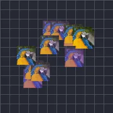

Repetición dispersa

Crea copias de la capa y las dispersa al azar dentro de un círculo a su alrededor. La evolución mueve las copias; la semilla de dispersión elige otro patrón.
Ajustes
| Ajuste | Tipo | Rango | Predeterminado |
|---|---|---|---|
| Cantidad | Número | 0 a 150 | 20 |
| Radio | Número | 0 a 2000 | 300 |
| Evolución | Número | -100 a 100 | 0 |
| Semilla de dispersión | Número | 0 a 9999 | 0 |
| Rango de posición | Punto (X, Y) | -99999 a 99999 | 0, 0 |
| Rango de escala | Número | 0 a 10 | 1 |
| Rango de rotación | Ángulo | -3600° a 3600° | 0° |
| Rango de opacidad | Número | 0% a 100% | 100% |
| Color de relleno | Color | – | #FFFFFF |
| Cantidad de relleno | Número | 0% a 100% | 0% |
| Inicio del rango | Número | 0% a 100% | 0% |
| Fin del rango | Número | 0% a 100% | 100% |
| Desplazamiento del rango | Número | -1000% a 1000% | 0% |
| Suavizado | Opción | Lineal, Suavizar entrada, Suavizar salida, Suavizar entrada y salida | Lineal |
| Orden aleatorio | Activado o desactivado | – | Desactivado |
| Semilla | Número | 0 a 9999 | 0 |
| Retraso por copia | Número | -60 s a 60 s | 0 s |
| Posición aleatoria | Punto (X, Y) | 0 a 99999 | 0, 0 |
| Rotación aleatoria | Ángulo | 0° a 3600° | 0° |
| Escala aleatoria | Número | 0% a 1000% | 0% |
| Opacidad aleatoria | Número | 0% a 100% | 0% |